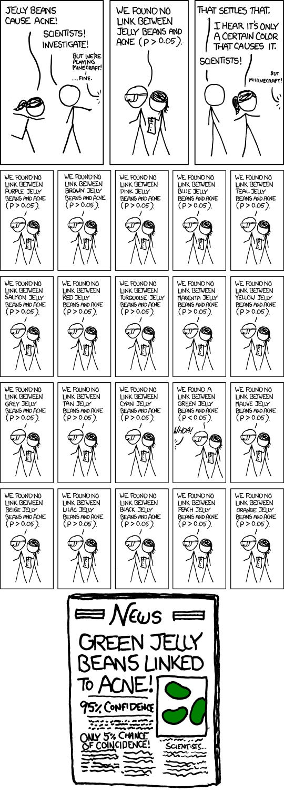

Against using Nicholas Cage movies to teach correlation and causation
I recently took a short statistics course as part of my PhD-studies and came across one of my pet-peeves in introductory statistics content. In every intro to stats book or course, one of the objectives is to teach students that correlation does not imply causation. Very often this is taught with a graph like this:
The students in the audience laugh. What a silly correlation! Obviously there’s no causality there! They write down “correlation does not imply causation” and then the teacher move on to the next powerpoint slide.
I don’t like these for a number of reasons.
Reason 1: Where’s the doom and gloom?
My problem with these demonstrations is not that they don’t effectively communicate the point, but that they’re too effective. The non-validity of the correlation is so clear that you barely have to think about why anyone would ever come to draw causal conclusions from observational data. But we really do that all the time. Falling into causal thinking is a strong tendency in human cognition. Counteracting that takes effort. That means one should be suspicious of the pedagogical value of demonstrations that are absorbed so effortlessly.
I think it’s better to set up examples where inferring causation comes naturally to people, then trip people up. Any good introduction to the idea “correlation does not imply causation” should first evoke a feeling of confusion. I always liked the example Daniel Kahneman (Rest In Peace) brought up in Thinking Fast and Slow when talking about our bias towards causal thinking:
“Highly intelligent women tend to marry men who are less intelligent than they are.”
Reason 2: Why always time-series data?
This one is less of a consistent problem in intro-to-stats content but most examples I’ve seen have used time-series correlations to make this point. I think this is one of the reasons the demonstration slide down so easily. A lot of things happen in the world, just because thing A happened before thing B doesn’t mean there’s a causal relationship. Obviously! Although people sometimes do make that type of inference too easily, see for example this graph about how reduced institutionalization in mental hospitals in the U.S. was followed by a growing prison population, which I saw uncritically reposted multiple times last year, it is very clear to understand conceptually when no plausible causal link comes to mind.1
I think using time-series correlations where there is a readily available causal idea would be an improvement pedagogically. But most correlations we come across as in research won’t be time-series data. Instead it will often concern inter-individual variation, like a relationship between interleukin-6 and depressive symptoms, and the result will instead be visualized on a scatterplot with a regression line. I think the nature of these types of correlations are much more easily imbued with a vague aura of causality. The very same individuals that had more interleukin had worse depressive symptoms!
This type of data is just as observational as the time-series examples. I think it’s better to use them since they’re closer to the most common form of correlation.
Reason 3: random correlation vs. spurious correlation
I also think these funny and obviously non-causative correlations mix up (or at least combine) two different types of false relationships.
If you look at a lot of random things sometimes you’ll get a “statistically significant” correlation, even when there’s no possible way there’s a relationship. Indeed the example pictured above is barely different from finding a significant association between yearly Nicholas Cage movies and a string of random numbers I generate on my computer (after trying a bunch of times). This random-number-version seems to lack the same demonstrative oomph for showing the limits of observational data. That’s because these examples are teaching two lessons at the same time! Besides the difference between observational and experimental data they are, at the same time, teaching students about the limits of hypothesis testing itself. If there’s no true correlation between the things you’re looking at you’ll still get a “significant” p-value 5% of the time. Cue the xkcd comic:

This double-lesson-property could give the false impression that if you look at enough things, you simply need to correct for multiple comparisons and find causative links! (These types of corrections are necessary and looking for associations is of course important, it can be a promising way to figure out what to explore further. But all this presupposes some prior idea of a plausible causal link).
Relatedly one might get the idea that replicating the correlation in a subsequent study gets you closer to proving a causal link. Teaching people about the limits of hypothesis testing and the correct interpretation of p-values is no doubt important, but it’s fundamentally different from the problem with observational data. Or to put it simply: Confounding replicates.
How to teach this then?
I think good examples teaching this concept should first and foremost emphasize how confounders (e.g. common causes) can create plausible sounding and reliable statistical-but-non-causal relationships. And don’t use time-series data.2 Beyond that I think it should show the fundamental rift between experimental data with manipulation and randomization, and observational data about the state of the world. This really is the central thing: Even when we have plausible-sounding mechanisms, randomized experiments can reveal things aren’t as we thought. Until we’ve done those experiments, or if we can’t do them, we’re always in a deeply more uncertain place scientifically.
I don’t know any examples that I’ve found perfectly elegant. But I remember that one of my favourite science communicators Ben Goldacre had a nice part in his book Bad Science where he talked about antioxidant vitamin pills and lung cancer. He first set up the observed correlation between these things, and also set up a plausible mechanism to explain the correlation (the free radical theory of aging). That all sounds well and good, but when researchers actually ran clinical trials they found that the people who took the beta-carotene and vitamin A pills were more (!) likely to die from lung cancer. I think examples like this are good for instilling some doom and gloom and doubt about correlational data, but in an ideal case one should also present what the source of the spurious correlation was.
To be fair, people rarely teach this concept with a single example. The problem I’m pointing at is a mostly unnecessary pet-peeve, I know. But I also do think the first impression people have of a concept matters, at least a bit. And for that purpose, I wish they would come up with something other that wacky time-series correlations.3
Footnotes
There is something extra fragile with time-series correlations. There’s only one world and history only happened once. I think this is one of the reasons subjects like political science is in an epistemically more difficult position than for example medicine.↩︎
unless students are likely to primarily work with that.↩︎
This post may seem like an attack on Tyler Vigen’s spurious correlation website. I want to be clear I have nothing against the site and I think it’s a funny project and even a good viral type of science communication. It’s existence online is good! My problem here is with it’s repeated role in into-to-stats content for university level students.↩︎